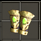
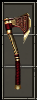
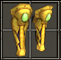
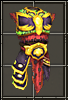

| 中文名称 | 套装奖励 | 组件名称 | 组件种类 | 组件属性 | 需要力量 | 需要敏捷 | 需要智力 | 需要等级 | 英文名称 |
| 影之护卫 |
2 件奖励： 20% 吸取生命抵抗 +80 生命 3 件奖励： 40% 吸取生命抵抗 +140 生命 4 件奖励： +25% 生命吸取 60% 吸取生命抵抗 +200 生命 5 件奖励： +25% 生命吸取 60% 吸取生命抵抗 +28 力量 +200 生命 +40 点战斗能力 全套奖励： +50% 生命吸取 60% 吸取生命抵抗 +48 力量 +200 生命 +60 点战斗能力 |
暗影护臂  |
臂(战) |
180 护甲 15.0% 机率发动下列之一: 20 ~ 35 活力伤害 15 ~ 30% 燃烧法力 +15% 攻击速度 +42 点防御能力 +2 到 尸王召唤 套装：影之护卫 组件之一 |
134 | 309 | 0 | 31 | Shadow Guard |
暗影之墙 （略微透明） |
盾 |
29% 机率格挡掉 312 伤害 2.50 秒格挡恢复 131 伤害 +42 点防御能力 +10% 吸收攻击能量 +60% 减少来自 恶魔 的伤害 +1 到死灵专精 的所有技能 套装：影之护卫 组件之一 |
347 | 0 | 0 | 31 | Shadow Guard | ||
|
暗影之毒  |
斧 |
107 ~ 115 伤害 速度：0.35（基础攻速：93%） 17 ~ 21 活力伤害 -20% 全部属性要求 +60% 伤害对 恶魔 +1 到死灵专精 的所有技能 套装：影之护卫 组件之一 |
347 | 134 | 0 | 31 | Shadow Guard | ||
暗影面罩 （装备后脸部有一层绿色半透明面膜） |
头(战) |
180 护甲 20% 吸取生命抵抗 100% 吸取法力抵抗 +21 敏捷 +42 点防御能力 套装：影之护卫 组件之一 |
134 | 309 | 0 | 31 | Shadow Guard | ||
|
暗影护胫甲  |
腿(战) |
150 护甲 +21 敏捷 +20% 移动速度 +42 点防御能力 +2 到 灵魂守护 套装：影之护卫 组件之一 |
134 | 309 | 0 | 31 | Shadow Guard | ||
|
暗影护卫铠  |
胸(战) |
180 护甲 +42 点防御能力 +20 伤害对 亡灵 +50% 减少来自 亡灵 的伤害 +2 到 死亡护卫 +1 到死灵专精 的所有技能 套装：影之护卫 组件之一 |
134 | 309 | 0 | 31 | Shadow Guard |
|